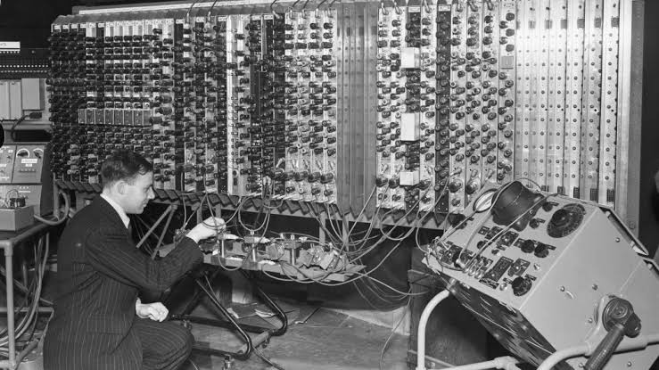
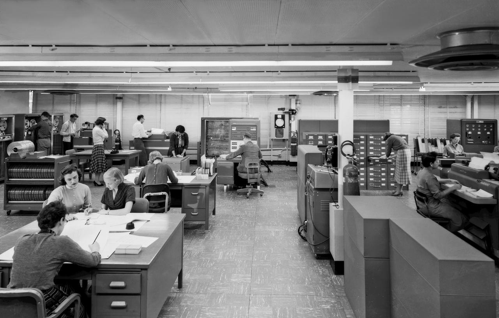
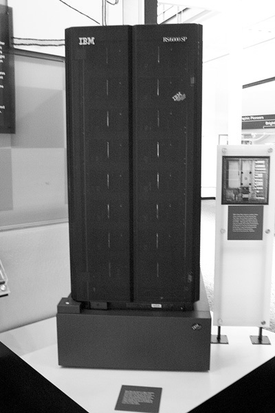

Especial / Tecnologia
MÁQUINAS QUE PENSAM?
"Eu proponho considerar a questão: 'As máquinas podem pensar?'"
- Alan Turing, 1950.
Por Redação / Publicado em Especial Digital
DARTMOUTH, ESTADOS UNIDOS. Uma pergunta antes restrita à ficção chega aos laboratórios: uma máquina pode aprender, resolver problemas e usar a linguagem?
Nos anos 1950, matemáticos e engenheiros começam a investigar se essas capacidades poderiam ser descritas em instruções para um computador.
Em 1943, Warren McCulloch e Walter Pitts propuseram um modelo lógico inspirado nos neurônios. Em 1950, Alan Turing sugeriu avaliar a inteligência de uma máquina por suas respostas numa conversa escrita. Eram caminhos diferentes para uma mesma questão: como transformar aspectos do raciocínio em algo que uma máquina pudesse executar?
O debate ganhou força em 1956, quando pesquisadores se reuniram no Dartmouth College para estudar aprendizagem, linguagem e resolução de problemas. Os computadores ainda eram enormes e limitados, mas uma nova área de pesquisa começava a tomar forma: a Inteligência Artificial.

De Romances e Mitos para os Laboratórios
Muito antes dos computadores, o homem já imaginava a criação de seres artificiais. Na Grécia Antiga, mitos falavam de estátuas, autômatos e criaturas capazes de executar tarefas.
Não se tratava ainda de ciência, mas essas histórias mostram que o desejo de criar algo capaz de imitar o homem acompanha a humanidade há séculos. Com o avanço da matemática, da lógica e, mais tarde, dos computadores, esse antigo sonho começou a ganhar bases científicas.
O Cérebro Transformado em Cálculos
Em 1943, Warren McCulloch e Walter Pitts apresentaram um modelo matemático inspirado no funcionamento dos neurônios. A proposta procurava representar, por meio da lógica e de cálculos, como unidades semelhantes às células nervosas poderiam produzir certos processos.
Era um passo pequeno, mas decisivo: uma questão ligada à biologia e à filosofia começava também a ser investigada pela matemática e pela computação.
Um Matemático Faz uma Pergunta Incômoda
Em 1950, o matemático britânico Alan Turing publicou Computing Machinery and Intelligence. Em vez de definir o que seria “pensar”, propôs observar se, numa conversa escrita, uma máquina poderia ser confundida com uma pessoa.
A experiência ficou conhecida como jogo da imitação. Mais tarde chamada de Teste de Turing, ela não criou uma máquina inteligente, mas tornou concreta uma discussão que influenciaria gerações de pesquisadores.
“As máquinas podem pensar?”
1956: Nasce um Novo Campo da Ciência
HANOVER, NEW HAMPSHIRE. Pesquisadores reuniram-se no Dartmouth College para discutir se máquinas poderiam aprender, resolver problemas, usar linguagem e tomar decisões.
John McCarthy, Marvin Minsky, Nathaniel Rochester e Claude Shannon estavam entre os nomes envolvidos. O encontro ficou conhecido como Dartmouth Summer Research Project on Artificial Intelligence, e foi nesse contexto que a expressão “Inteligência Artificial” ganhou nome e lugar nos laboratórios.
Nos anos 1950 e 1960, computadores enormes e limitados já executavam programas de lógica e resolução de problemas. A máquina inteligente ainda era uma promessa, mas o homem começava a ensinar seu raciocínio às máquinas.

“Todo aspecto da aprendizagem ou qualquer outra característica da inteligência pode, em princípio, ser descrito com tanta precisão que uma máquina pode ser construída para simulá-lo.”
Proposta de Dartmouth, John McCarthy e colaboradores, 1955E Depois? Uma Ideia que Não Parou em 1956
Em 1997, o computador Deep Blue, desenvolvido pela IBM, derrotou o campeão mundial de xadrez Garry Kasparov. Quase duas décadas depois, em 2016, o sistema AlphaGo venceu Lee Sedol no jogo de Go, demonstrando avanços em programas capazes de aprender estratégias complexas.

Hoje, computadores realizam tarefas que pareciam pertencer exclusivamente ao homem. A pergunta de Turing, porém, continua ecoando: quão longe uma máquina pode chegar?
A história da Inteligência Artificial estava apenas começando.